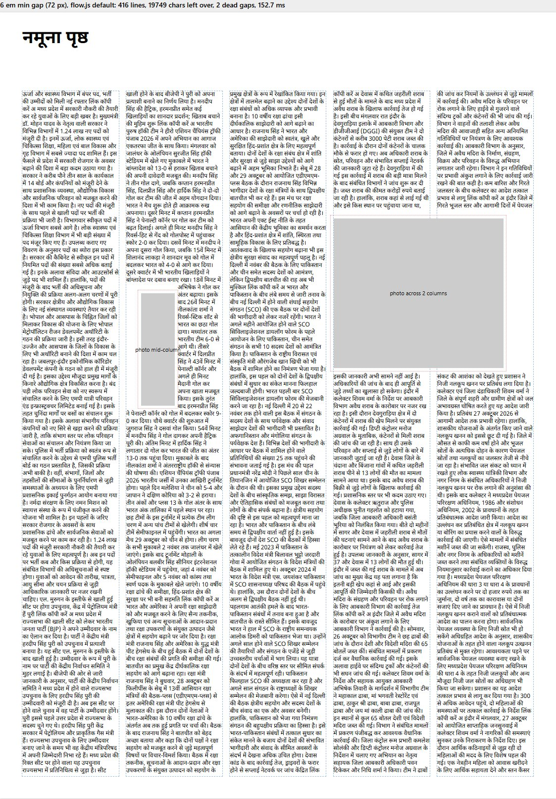
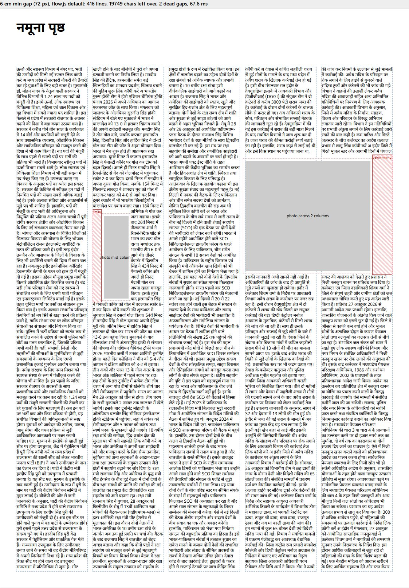

Same page, same text placement. The red hatched boxes are what flow() now reports as deadGaps, for the editor's preflight warning: smaller-side (left of the column 2 photo) and below-min-gap (the strip in column 5).
Generated 2026-10-29 from scripts/preview.mjs (A3, 5 columns, real Hindi copy). Click an image for full size.

